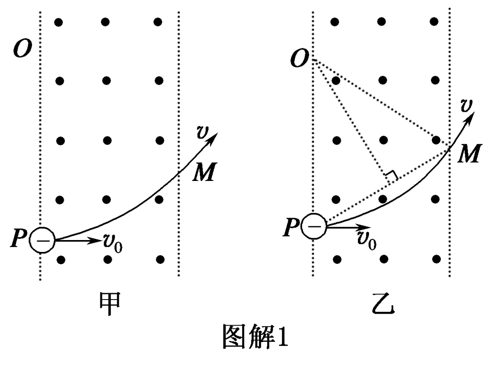
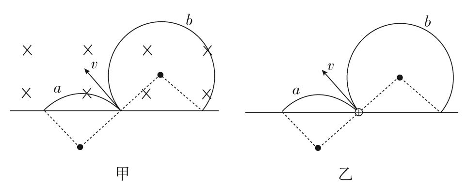
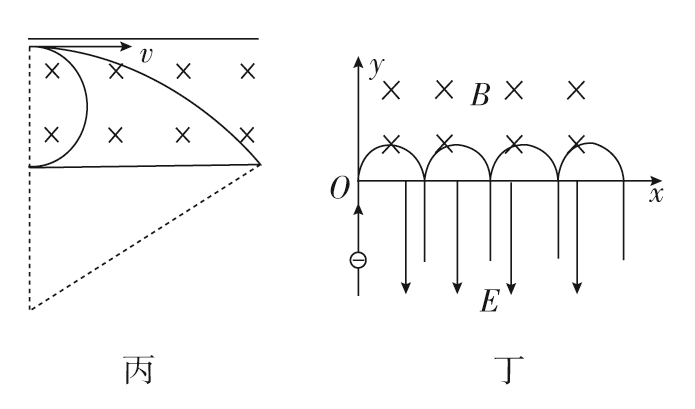

高中物理 · 洛伦兹力 · 圆周运动 · 临界问题
磁感线穿入手心，四指指向正电荷运动方向；若是负电荷，四指指向其运动的反方向；拇指所指即洛伦兹力方向。
当 $v \perp B$ 时，洛伦兹力提供向心力，粒子做匀速圆周运动：
由此得：
粒子速度方向的改变角（偏向角 $\varphi$）等于它在磁场中运动对应的圆心角：
| 方法 | 操作 |
|---|---|
| 方法 1 | 作粒子进入磁场方向的垂线和离开磁场方向的垂线，两条垂线的交点即为圆心。 |
| 方法 2 | 作进入（或离开）磁场方向的垂线，再作轨迹中两点连线的中垂线，两条线的交点即为圆心。 |

| 途径 | 方法 |
|---|---|
| 几何途径 | 利用平面几何关系，一般是利用三角函数解直角三角形。 |
| 物理途径 | 直接由半径公式 $r=\dfrac{mv}{qB}$ 求解。 |
除 $t=\dfrac{\varphi}{\omega}=\dfrac{\varphi m}{qB}$ 外，也可由弧长 $s=r\alpha$（$\alpha$ 为圆心角）得到：
| 类型 | 关键思路 |
|---|---|
| 直线边界 | 粒子可能从边界射出或返回，作圆看与边界相交 |
| 圆形边界 | 注意"径向射入必径向射出"的对称性 |
| 最小磁场区域 | 让轨迹圆与不要求区域相切，求最小半径/面积 |
| 临界速度 | 恰好不射出边界对应轨迹圆与边界相切 |
带电粒子在匀强磁场中运动时，由于某些条件不确定，其运动轨迹往往不唯一，形成多解问题。常见原因有以下四类。
受洛伦兹力作用的带电粒子，可能带正电，也可能带负电。在相同的初速度条件下，正、负粒子在磁场中的运动轨迹不同，因而形成多解。
如图甲，带电粒子以速度 $v$ 垂直进入匀强磁场：若粒子带正电，其轨迹为 $a$；若粒子带负电，其轨迹为 $b$。

如图乙，带正电粒子以速度 $v$ 垂直进入匀强磁场：若 $B$ 垂直纸面向里，其轨迹为 $a$；若 $B$ 垂直纸面向外，其轨迹为 $b$。
同理，若 $B$ 的大小不确定，由半径公式 $r=\dfrac{mv}{qB}$ 可知，$r$ 也随之改变，粒子出射位置也会不同，从而形成多解。
有些题目只指明了带电粒子的电性，但未具体指出粒子射入磁场时速度的大小或方向。此时必须考虑由于速度不确定而形成的多解。
如图丙所示，带电粒子在洛伦兹力作用下飞越有界匀强磁场时，由于粒子速度大小不确定，它飞出磁场的情况不唯一：可能穿过下边界，也可能转过 $180^\circ$ 反向飞出，于是形成多解。

带电粒子在磁场中运动时，若因为磁场周期性变化、粒子与挡板反复碰撞，或与电场组合等原因而导致运动具有周期性或往复性，则通常会形成多解。
如图丁所示，粒子进入磁场的位置、时间不唯一；在交变电磁场中，粒子可能在不同相位进入磁场，导致最终落点或运动时间出现多个可能值。
| 不确定因素 | 导致的多样性 | 突破口 |
|---|---|---|
| 电性 | 洛伦兹力方向相反，轨迹偏转方向不同 | 分别按正、负电荷作图 |
| B 的方向 | 圆心位置分别在对称两侧 | 分向里/向外两种情况 |
| B 的大小 | 半径 $r=mv/qB$ 不同 | 讨论不同半径下的边界交点 |
| v 的大小/方向 | 圆心位置、半径不同 | 按速度范围或方向分类讨论 |
| 周期性/往复性 | 进入位置、时间、碰撞次数不唯一 | 找出周期规律，列通项 |
洛伦兹力的方向总跟带电粒子运动的速度方向垂直，所以洛伦兹力对运动电荷不做功。它不会改变带电粒子速度的大小，只改变粒子运动的方向。带电粒子垂直进入匀强磁场，只受洛伦兹力作用时，它将做匀速圆周运动。
红色为速度方向，蓝色为洛伦兹力方向（始终指向圆心）。可调节速度与磁场强度观察半径变化。